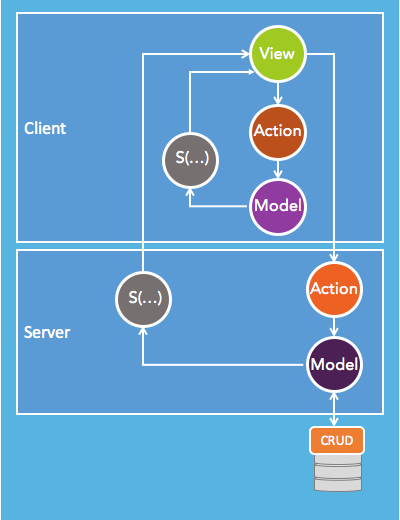

The SAM Pattern
SAM is a new reactive/functional pattern that simplifies Front-End architectures by clearly separating the business logic from the view and strictly decoupling back-end APIs from the Front-End. SAM is technology independent and as such can be used to build Web Apps or Native Apps, using your favorite framework. It is also protocol independent and can be implemented over HTTP, WebSockets...
SAM is unapologetically driven by simplicity and challenges the complexity of frameworks like Google's Angular or Facebook's React+JSX+Flux/Redux+Saga+Thunk+GraphQL+Relay. One of SAM's key goals is to enable everyone to build beautiful and engaging HTML5/CSS3/JavaScript Web Apps while retaining what makes React.js so unique:
- Composition
- Unidirectional data flow
- Freedom from DSLs
- Explicit mutation
- Static mental model
SAM is also challenging architecture patterns like BFF or the Vertical Slice Pattern which suggest creating view specific APIs, per platform, app, versions of an app...
This new pattern was first introduced in an InfoQ article, by Jean-Jacques Dubray. A translation of the article is available in Chinese, French and Russian
How does SAM work?
SAM is extremely simple, yet it is built on one of the most robust foundation of computer science (TLA+).
SAM recommends to factor the business logic underlying a graphical user interface along three elements: actions, model and state:
- Actions propose values to the model
- The Model solely decides to accept these values
- Once accepted, the state makes sure that everyone who needs to learn about the new resulting application state is notified, in particular the view which is considered as the “state representation”
Every user or server event is processed as a “step” which involves a propose/accept/learn flow.
That's it! That's all there is to SAM.
The pattern is best implemented with the model as a single state tree and the view as a pure function of the model
The pattern forms a reactive loop, events trigger actions which represent data to the model, which renders the state. Logically, after every step a new "state representation" is created (as a pure function of the model).
The SAM pattern is capable decoupling the view from the busingess logic entirely. As we show in many samples below the view is defined by stateless components which have no knowledge of the model or even the actions.
When learning SAM, we recommend that you make a clear distinction between the programming model (State, Actions, Model), the wiring (how the elements of the pattern communicate) and the Architecture (where the elements of the pattern are physically running). SAM supports different wiring approaches and allows you to write code that can easily be migrated from the client to the server or vice versa (isomorphic javascript).
{kind=link}
The View as a Function of the Model
When learning SAM, the best starting point is to understand the functional relationship between the view and the model. If you are familiar with React.js you probably noticed that one of the main goals of React's component model is to help you create the components' render function.
SAM suggests using the same approach and decomposing the view as a series of pure functions.
V = f( M )
This concept is extremely simple to implement. I generally implement the front-end components as part of theme singleton:
var theme = {} ;
// React
theme.ready = (counter,intents) => <Counter count={counter} action={intents['start']}/>
var Counter = ({counter,action}) => (
<p>Counter: {counter} </p>
<button onClick={action}>
Start!
</button>
)
// Snabbdom
theme.ready = (counter, intents) => h('div', [
'Counter: ',
counter,
h('br'),
h('button', {on:{click:function() { intents['start'](); }}}, 'Start')
]);
// Vanilla.js - ES6
theme.ready = (counter, intents) => `
<p>Counter: ${counter} </p>
<form onSubmit="return ${intents['start']}({});">
<input type="submit" value="Start">
</form>`
With SAM, front-end developers can focus building the view directly from the model, unencumbered from the underpinning APIs: in other words, how does the View look like given any combination of the Model property values? How the values got there is irrelevant. This is the paradigm shift that React introduced in Front-End architectures. SAM does not always eliminate the need for interactions (request/responses), but it tends to keep a balance between reactive and interactive. That functional relationship is probably the hardest thing to get in React and therefore SAM, you have to try it for yourself.
There is a fair amount of questions asking "why not use templates"? The reason is relatively simple, Templates are interpreters while functions are mini-code generators. Interpreters are limited in what they enable you to express (not to mention you often have to learn a specific syntax that does not translate at all to another template interpreter). On the other hand, code generators are infinitely flexible with hardly any drawbacks. I would personally choose functions over templates any day. Some people have mentioned the risks of cross-site-scripting when using raw JavaScript. That is a very real risk and developers must always think about escaping their parameter values. Stateless React.js components are a perfectly good way to implement these functions, if you absolutely need a framework.
Business Logic
Not only SAM supports a component-based structure for the View, but SAM enables a complete decoupling of the application logic from the View components. If you are not convinced you can look at the TODO sample below and the View components in the "theme.js" file.
A good Front-End Architecture should enable you to pin your modularized functions to the UI components in the most decoupled way possible. That way the technology backing the components can be swapped out and all your business logic is not in a hostage situation (at the mercy of the next great late framework) - Thomas J. Buhr
SAM's factoring of the business logic is based on TLA+:
TLA+ is based on the idea that the best way to describe things formally is with simple mathematics, and that a specification language should contain as little as possible beyond what is needed to write simple mathematics precisely. TLA+ is especially well suited for writing high-level specifications of concurrent and distributed systems. - Dr. Leslie LamportIf you are interested in learning about TLA+, I found Stephan Merz's course the most approachable introduction to TLA+.
TLA+ is a formal specification which can be used describe, analyze and reason about systems, such as:
- sequential algorithms
- interactive systems
- reactive & distributed systems
- real-time & hybrid systems
- security-sensitive systems
TLA+ offers a uniform language where transition system and properties represented as formulas, where Mathematics form the basis for description and analysis of reactive and distributed systems
TLA defines two levels of syntax: action formulas and temporal formulas.
- action formulas describe states and state transitions
- temporal formulas describe state sequences
TLA+ also includes concepts such as safety (something bad should never happen) and liveness (something good eventually happens).
In SAM, the business logic is decomposed in three elements: Actions, the Model and the State.
Warning I have been told by readers that it is important to emphasize that SAM does not use the word "State" in the traditional sense of computer science (where a state is an assignment of values to all possible variables). The State-Action elements, in SAM, specify the behavior of the system:
A State-Action behavior is a sequence:
α1 α2 s1 −→ s2 −→ s3 −→ ...The step <si, αi, si+1> represents a transition from state si to state si+1 that is performed by action αi
Please refer to Section 2 of this paper from Dr. Lamport for a discussion on State-Action behavior.
If you don't like the State-Action-Model terminology, I could have also used the Paxos protocol terminology (PAL, Proposer, Acceptor and Learner):
Client Proposer Acceptor Learner
| | | | | | |
X-------->| | | | | | Request
| X--------->|->|->| | | Prepare(1)
| |<---------X--X--X | | Promise(1,{Va,Vb,Vc})
| X--------->|->|->| | | Accept!(1,Vn)
| |<---------X--X--X------>|->| Accepted(1,Vn)
|<---------------------------------X--X Response
| | | | | | |
View Action Model State (SAM)
In essence the Paxos protocol roles are exactly the roles of the SAM components: Actions propose values to the Model which Accepts them which informs the State (the Learner), which creates the State Representation (View).
I personally like SAM because it surfaces the concept of "State-Action" behavior, which is at the core of SAM, and leads naturally to creating the "State Representation" (i.e. the View).
So, for all intent and purposes, please be warned that SAM's Model is the assignment of values to all possible variables of the application state, while SAM's State, which is sometimes associated to the "control state" (such as "started" and "stopped" are two control states of a car), refers to a function that computes the current (control) state of the system. In general, the "State" of a system controls which actions are allowed at any given point in time.
Actions
Actions are pure functions which accept a dataset and return a dataset. The purpose of a function is to compute the values we want the model to accept. There is nothing else to it. In Redux for instance, "actions" are closer to intent or event. This is a fundamental difference between Redux and SAM because in Redux the reducer creates an unnecessary and unwanted coupling between the model mutations and the logic that translates intents into model property values.
function action(data,present) {
// compute the values we want the model to mutate to
var data_ = the_actual_pure_function_implementing_the_action(data) ;
// present these values to the model
present(data_) ;
// since we are in a reactive loop, the action returns nothing
}
function changeOfAddress(address,present) {
address = address || {} ;
address.country = address.country || 'Australia' ;
getPostalAddress( address, function(addr) {
// assuming the dataset returned by the 3rd party
// service can be directly presented to the model
present(addr) ;
}) ;
}
Action logic can typically be reused across models, you can even think some companies will start offering SAM actions following a SaaS model. A "change of address" action, which returns a postal address given user data is highly reusable, across the enterprise.
Model
The model contains all the application state and (logically) exposes a single method: present(data). The model is responsible for accepting (or rejecting) the effects of an action. The model is where integrity rules get enforced. In other words, actions are generally triggered with some context specific data, they do not have access to the application state, for instance, when you implement a "change password" action, the action will check if the password is valid in the context of the request, but the model might enforce additional integrity rules, such that you cannot use a password that matches any of your last three passwords.
The model is also solely responsible for the persistence of the application state. As such, the Model's architecture may follow the Event/Command Sourcing Pattern with respect to the data the it accepts
model.present = function(data, render) {
if (data.address !== undefined) {
model.shippingAddress = data.address ;
model.billingAddress = model.billingAddress || data.address ;
}
// trigger the state representation rendering
render(model) ;
// since we are in a reactive loop, the present method returns nothing
}
State
This concept is unique to SAM. Its purpose is to futher decouple the Model from the View (i.e. the State Representation). The State has two roles:
- Decide how to translate the model property values into a State Representation
- Process the next-action predicate
// Assuming the following model structure
var model = {
counter: COUNTER_MAX,
started: false,
launched: false,
aborted: false} ;
// Derive the current control states of the system
state.ready = function(model) {
return ((model.counter === COUNTER_MAX) && !model.started && !model.launched && !model.aborted) ;
}
state.counting = function(model) {
var status = ((model.counter <= COUNTER_MAX) && (model.counter >= 0) && model.started && !model.launched && !model.aborted) ;
return status ;
}
state.render = function(model) {
state.representation(model)
state.nextAction(model) ;
}
state.representation = function(model, display) {
var representation = 'oops... something went wrong, the system is in an invalid state' ;
if (state.ready(model)) {
representation = state.view.ready(model) ;
}
if (state.counting(model)) {
representation = state.view.counting(model) ;
}
if (state.launched(model)) {
representation = state.view.launched(model) ;
}
if (state.aborted(model)) {
representation = state.view.aborted(model) ;
}
// mount the corresponding representation in the GUI
display(representation) ;
// since we are in a reactive loop, the present method returns nothing
}
Depending on the number of control states of your application and the size of your model, these functions can become rather tedious to write. Again, there is no requirement to adopt such an approach, it may help in some cases and be a burden in another where a series of if-then-else on some key properties of the model is good enough.
Once the state representation is rendered, the State is responsible for invoking the next-action predicate (nap), which is a pure function of the model. The purpose of the nap() function is to determine if, given the current control state of the model, there are some automatic actions that need to be invoked. For instance in the Rocket Launcher example, the "decrement()" action is invoked by the next-action predicate while the system is in the counting state. When the counter reaches zero, it invokes the "launch()" action.
state.nextAction = function (model) {
if (state.counting(model)) {
if (model.counter>0) {
actions.decrement({counter: model.counter},model.present) ;
}
if (model.counter === 0) {
actions.launch({},model.present) ;
}
}
}
When you feel that a full state machine is required for your app, you may use a library such as the STAR library.
State Representation
The State Representation function(s) are technology agnostic. SAM only requires that these functions be pure functions of the model (i.e. stateless from the model's perspective). Here is an example using Inferno:
// State representation of the counting state
...
theme.counter = function(counter) {
return {
tag: 'div',
children: [
{
tag: 'p',
children: `counter: ${counter}`
}
]
}
}
InfernoDOM.render(theme.counter(10), document.body);
}
Stateless React.js components would work great. The same type of function could we writen in Objective-C for the viewDidLoad method.
Alex Schepanovski explains how to achieve React.js functionality with just a few lines of JQuery.
On of the key problems that frameworks try to tackle is the wiring between the HTML events and event handlers. As you can see in the code above, the "abort" action has been hard coded in the counting state representation. This is not a great coupling and in general it should be avoided. SAM provides an elegant solution to decouple the view components from your application via the State function.
You can design your view components to accept a list of "intents" which map the application's action to the component's handlers. We have implemented that approch in the TODOSAM sample. All the theme's components accept an intent map:
theme.list = (todos, displayActive, displayCompleted, intents) => {
...
const label = `<label ondblclick="return actions.${intents['edit']}({'id':'${todo.id}'});">${todo.name}</label>` ;
...
}
// mapping view intents -> actions
actions.intents = {
edit: 'edit',
save: 'save',
done: 'done',
displayAll: 'displayAll',
displayActive: 'displayActive',
displayCompleted: 'displayCompleted',
toggleAll: 'toggleAll',
delete: 'delete'
}
The concept could also be extended to map the event format to be directly consumable by the action, but this coupling is less important than the coupling of the actions with the view.
View-Model
When the View is expressed as a pure function of the Model (as opposed to a template or a query), the Model does not have to conform artificially to the interface of the view.
With SAM, the View is generally decomposed into components, each of them expressed as pure functions exposing a component specific/centric interface.
For instance, when a view displays a value v and a graphical indicator as to whether this value is great, good or bad, there is no reason to have the indicator’s value in your model: the component's function should simply compute the value of the indicator from the value v provided by the model.
Now, it’s not a great idea to directly embed these computations in the the view, but it is not difficult to use a view-model function, such as:
V = f( vm(M) )
Wiring
The SAM pattern can be described as a Mathematical expression (formula):
V = S( vm(M.present(A(data))), nap(Model) )Where S(), vm(), A() and nap() are pure functions with respect to the model.
However, that expression is only a logical expression that describes the sequence in which the elements of the pattern are invoked. The expression itself is not representative of the Reactive Flow or the different wiring options.
SAM can be implemented in the browser (like React and Redux), but one of SAM's advantages is that the elements of the pattern can be distributed and composed in virtually any topology. So there is not a single way to wire the pattern.
You should also keep in mind that SAM is a reactive pattern so there is never a response that is expected: The view triggers an action, which presents is dataset to the model, which asks the state to create a state representation (i.e. View). The new state representation is just that, a new view of the current state of the model. It is **not** a response to the original view.
Let's start with a sample where running SAM exclusively in a single process (e.g. the browser, perhaps assuming the model will communicate with a persistent store).
The model can be defined as a singleton, the actions as pure functions of a dataset, the state (stateRepresentation() and nap()) as a pure function of the model. Here is an example of wiring achieved with functional wrappers.
// Model is a singleton /////////////////////////////////////////////
var model = {} ;
model.present = function(data) {
// Logic that accepts or rejects the proposed values
// ...
// -> Reactive Loop
state(model) ;
// persist the new state
// this is generally guarded and optimized
model.persist() ;
} ;
model.persist = function() {
} ;
// Actions are pure functions /////////////////////////////////////////////
function action1(data) {
// Logic that prepares the data to be presented to the model
// ...
// -> Reactive Loop
present(data) ;
// to avoid a page reload
return false ;
}
function action2(data) {
// Logic that prepares the data to be presented to the model
// ...
// -> Reactive Loop
present(data) ;
// to avoid a page reload
return false ;
}
// State is a pure function /////////////////////////////////////////////
function state(model) {
// the state behavior is hard wired
stateRepresentation(model) ;
nap(model) ;
}
function nap(model) {
if (condition(model)) {
var data = f(model) ;
action2(data,model.present) ;
}
}
// View is a pure function /////////////////////////////////////////////
function someView(model) {
// render the view
var output = '' ;
// ...
// wire the possible actions in the view
output = output + 'onSubmit="JavaScript:return action1({data:data});'
// ...
// -> Reactive Loop
display(output) ;
}
// Wiring /////////////////////////////////////////////
//
// Actions are known to the stateRepresentation() and nap()
//
// Actions -> Model
function present(data) {
model.present(data) ;
}
// State -> View
function stateRepresentation(model) {
someView(model) ;
}
// View -> Display
function display(view) {
var stateRepresentation = document.getElementById("view");
stateRepresentation.innerHTML = view;
}
Of course, JQuery event handlers could also be used:
...
<input id="username" type="text" class="login-username" value="username">
<input id="password" type="password" class="login-password" value="password">
<button class="button button-green center-button" id="login">Login</button>
...
<script type="text/javascript">
$('#login').click(function() {
var session = $.post( "http://authserver/v1/login", { username: $( "#username" ).val(), password:$( "#password" ).val() } ) ;
session.done(function( data ) {
var loginPanel = document.getElementById("login_panel") ;
loginPanel.innerHTML = state.render(model.present(data)) ;
;
})
}) ;
</script>
...
// another option is to implement the state, model and actions on the server:
<script type="text/javascript">
$('#login').click(function() {
var session = $.post( "http://authserver/v1/login", { username: $( "#username" ).val(), password:$( "#password" ).val() } ) ;
session.done(function( stateRepresentation ) {
var loginPanel = document.getElementById("login_panel") ;
loginPanel.innerHTML = stateRepresentation ;
;
})
}) ;
</script>
One can also use RxJS to wire events to actions.
var result = document.getElementById('submit');
var source = Rx.Observable.fromEvent(document, 'click');
var subscription = source.subscribe(function (e) {
var data = { name: document.getElementById('name').value, ... }
result.innerHTML = state.render(model.present(data));
});
Wiring is an important concern when implementing the pattern. For instance, the mobx framework wires individual property value changes to the view rendering function, which is not representative of the behavior of the system and the processing of an action as a unit of work. As you can see in the example tab below, the view renders for state data changes:
// The state of our app
var state = mobx.observable({
nrOfSeats : 500,
reservations : [],
seatsLeft : function() { return this.nrOfSeats - this.reservations.length; }
});
// The UI; a function that is applied to the state
var ui = mobx.computed(function() {
return "\nSeats left: " + state.seatsLeft +
"
Attendees: " + state.reservations.join(", ") + "";
});
// Make sure the UI is 'rendered' whenever it changes
ui.observe(function(newView) { console.log(newView) }, true);
// Put in some test data
state.reservations[0] = "Michel";
state.reservations.push("You?");
state.reservations[0] = "@mweststrate";
state.nrOfSeats = 750;
<div>Seats left: 499<hr/>Attendees: Michel</div>
<div>Seats left: 498<hr/>Attendees: Michel, You?</div>
<div>Seats left: 498<hr/>Attendees: @mweststrate, You?</div>
<div>Seats left: 748<hr/>Attendees: @mweststrate, You?</div>
Time Travel
Gunar Gessner has implemented a client-side "Time Travel" dev tool that enables you to take snapshots of the model after every action is processed and then restore the state of the system with a given snapshot.
The SAFE container implements both a client-side and server-side "Time Travel" dev tool.
Micro Container
The SAFE project (State-Action-Fabric-Element) is a micro-container for SAM implementations which can run in the browser or on node.js. At a minimum SAFE enables you to wire the elements of the pattern. It also comes with Session Management, Logging and Error Handling. The current version enables global validation and enforcement of actions, including action "hang back". Last but not least, it implements the Time Travel dev tool.
Composition
The SAM pattern offers some generous composition mechanisms.
First Actions, as pure functions, compose naturally to present a single dataset to the model:
C(data) = A(B(data))
This type of composition is a functional composition and the resulting action is considered to be a single action applied to the system from SAM's point of view.
Similarly, the State Representation (View) can be decomposed in a hierarchy of components:
V = f( M ) f( M ) = f1( g1(M) + g2(M) ) + f2( h1(M) + h2(M) )
The most interesting composition mechanisms are at the pattern level itself. For instance, SAM supports an instance level composition where one instances runs in the browser and one instance runs in the server.
{kind=link}
// The composition has a single view V = Ss( Ms ) + Sc( Mc ) // Instance c (browser) invokes an action on instance s (server) // this action is generally invoked in the nap() function of the client V = Ss( Ms.present( As(Mc) )
Though it is theoretically possible, it is highly recommended to refrain from invoking client actions from the server. The role of the server is rather to deliver the SAM client instance as part of its state representation.
Here is a Parent/Child sample using React 15.0.2 with JSX/Babel. It shows how you can implement a complex form of wizard with a child instance and submit the resulting dataset to the parent, once the content of the form is valid.
NOTE: THIS IS JUST SOME INITIAL THOUGHTS, NEED MORE WORK:
SAM also offers an interesting alternative composition mechanism which enable to synchronize a client side and server side model, by which you present the same dataset to both the client side and server side model.
{kind=link}
State Machines and Automatic Actions
Computation is a major topic of computer science,
and almost every object that computes is naturally viewed as a state machine.
Yet computer scientists are so focused on the languages used to
describe computation that they are largely unaware that those languages
are all describing state machines - Dr. Leslie Lamport
SAM is particularly well aligned with the traditional semantics of State Machines except for one simple, yet fundamental difference. Traditional State Machine semantics imply that the actions somehow connect two states, so State Machines are described as a series of tuples such as:
initialState = S0 (S0,A01,S1), (S1,A12,S2)...
This definition is somewhat of an approximation: it is not the action that decides the resulting state, it is the model, which, once the action has been applied (its value have been accepted, or not) that decides the resulting state (Aik are the allowed actions in a given state Si) :
initialState = S0 = S( M0 ) (S0, A00, A01), (S1, A10, A11, A12)... S0 = S( M0 ) S1 = S( M1 ) ...
The tuples (Si,Aik,Sk) are merely an observation of the behavior of the state machine, rather than a physical representation of its runtime.
This change of perspective (not semantics) is minute, yet fundamental. SAM would not work (as well) if the traditional semantics of State Machine would be structuring the code. The SAM semantics are inclusive of this traditional structure, and therefore strictly compatible, but SAM by no means require that one uses a graph of State and Actions.
I believe that is why some people have expressed that SAM "feels natural".
The Rocket Launcher example shows how to implement the Sx() functions:
// Derive the current state of the system
state.ready = function(model) {
return ((model.counter === COUNTER_MAX) && !model.started && !model.launched && !model.aborted) ;
}
state.counting = function(model) {
var status = ((model.counter <= COUNTER_MAX) && (model.counter >= 0) && model.started && !model.launched && !model.aborted) ;
return status ;
}
state.launched = function(model) {
return ((model.counter == 0) && model.started && model.launched && !model.aborted) ;
}
state.aborted = function(model) {
return (
( model.counter <= COUNTER_MAX) && (model.counter >= 0)
&& model.started && !model.launched && model.aborted ) ;
}
I cannot emphasize enough that it is not necessary to adopt a State Machine structure to use SAM and more often than not if-then-else will be adequate. However, sometimes it may become easier to use a strict State Machine structure. These functions can be used to validate that an action is enabled or not. They can also more naturally break down the hierarchy in from which the view is rendered.
APIs
SAM was originally designed to solve the strong coupling that MVC creates between the Front-End structure and the Back-End APIs. APIs can be composed at a couple levels in SAM:
- Actions: for APIs with no side-effect whatsoever on the model
- Model: for CRUD APIs that persist/populate the model property values (commonly called the Data Access Layer)
function getRssFeed(data) {
var options = {
url: 'http://www.ebpml.org/blog15/feed/',
headers: {
'accept': 'application/json'
}
};
request(options, function (error, response, body) {
if (!error && response.statusCode == 200) {
// parse the RSS feed into a json object
parseString(body, function (err, result) {
// prepare proposed dataset
data.blog = result.rss.channel[0].item ;
// present data to the model
present(data) ;
});
}
});
}
Similarly, the model can perform all the persistence operations (which could result in rejecting some proposed values) before passing control of the Reactive Loop to the State object. That is very different from React because you cannot touch the State without triggering a rendering of the view, which makes very little sense, when you think of it. It only makes sense when you spread the model state into the various components, and even then it warps the articulation of APIs with the Front-End reactive Flow.
Headless SAM
SAM can also be used without a View, whereby it listens on incoming Action requests and returns a response which can be the model of a fraction of the model. As such SAM offers a new API implementation pattern which is particularly well suited for implementating Stateful APIs.
{kind=link}
A node.js implementation of Headless SAM would look like this:
var express = require('express');
var app = express();
//// Model ////////////////////////////
var S0 = { ... } ;
var present = (
function (initialState) {
var model = initialState ;
return (function( data, res) {
// mutate the model
...
state(model) ;
}) ;
}
)(S0);
//// Actions ////////////////////////////
actions.addAPI('submit') ;
app.post(actions.apis.submit.path, function(req,res) {
// extract intent from request body
var intent = new Intent('submit',req.body) ;
// Compute model property values
data_ = actions.impl.submit(intent) ;
// present data to the model
presentToModel(data_, res) ;
}) ;
//// State ////////////////////////////
function state(model) {
// prepare and return API response
var response = model.response() ;
res.send(response) ;
// execute next action predicate
nap(model) ;
}
The pattern can easily be adapted to mount a user session in the model or rehydrate/dehydrate the context of the request before/after the model mutates.
Isomorphic JavaScript
Typical SAM's implementations make it easy to move JavaScript code between the client or the server (a.k.a Isomorphic JavaScript).
| # | Client | Server | Implementation |
|---|---|---|---|
| 1 | View | Actions, Model, State | JQuery handlers call Actions Server returns HTML |
| 2 | View,Actions | Model, State | JQuery handlers implement actions which call present() Server returns HTML |
| 3 | View,Model,State | Actions | JQuery handlers invoke Actions, response is presented to the Model on the client Server returns JSON |
| 4 | View,State | Actions,Model | JQuery handlers invoke Actions, response is presented to the State on the client Server returns JSON |
| 5 | View,Actions,State | Model | JQuery handlers implement Actions which call present(), response is presented to the State on the client Server returns JSON |
For instance, in the Blog sample we have implemented the Actions on the client and the Model and the State on the server.
In that case, we have to implement two "APIs" on the server:
- init()
- present(data)
Option #1 should be preferred when authorization (RBAC) is a concern. Option #5 is the one that pushes as much processing on the client as possible.
function present(data) {
// client side
//model.present(data) ;
// server side
$.post( "http://localhost:5425/app/v1/present", data)
.done(function( representation ) {
$( "#representation" ).html( representation );
}
);
}
function init() {
// client side
//view.display(view.init(model)) ;
// server side
$.get( "http://locahost:5425/app/v1/init", function( data ) {
$( "#representation" ).html( data );
}
);
}
Concurrency
How can I get started?
We suggest that you download an HTML5 template of your choice and start building an application with it. To make this tutorial more realistic, we are going to build a simple Web Site with Blog and a Contact form.
The SB Admin template seems like a great starting point. The list of components are easy to identify, from the index.html file:
- ----- Structure ------
- Navigation Bar
- DropDown
- Search
- Menu
- Footer
- ----- Structure ------
- Stats Summary
- Graphs
- Tables
- ...

Many developers dislike the code that will follow (let's call it vanilla.js). Since this is a matter of preferences, there is not much point in arguing about it. I just happen to prefer a raw JavaScript/HTML5/CSS3 style because:
- it enables the greatest number of developers to become full stack developers (with Node.js)
- it enables the greatest decoupling between the View and the Model
- Vanilla.js makes it really easy to develop Isomorphic JavaScript
- And perhaps, most practically, it allows anyone to take the work of a Web designer and turn it into a beautiful Web app in a matter of minutes
The experienced developers will easily translate this code to meet their neesds. So let's go ahead and start creating the component interfaces without any further apologies:
var theme = {} ;
theme.head = function(title, includes, addons ) { } ;
theme.navBar = function(dropDowns,sideBar) { } ;
theme.adminDropDown = function(urls) { } ;
theme.search = function(search) { } ;
theme.menuItem = function(label,symbol, url, submenu, level) { } ;
theme.sideBar = function(menu,color) { } ;
theme.well = function(size,h,title,body,br) { } ;
theme.footer = function( includes ) { } ;
theme.statSummary = function(fa,label,number,link,linkLabel,color) { } ;
theme.advancedTable = function(size,id,color,heading,headers,columns,data,href,domain) { } ;
theme.ediTable = function(id,headers,data,editable, style, maxSize) { } ;
...
The implementation of each function is just a parameterization of the HTML template (the whole theme implementation can be found here):
theme.statSummary = function(fa,label,number,link,linkLabel,color) {
return (
'<div class="col-lg-3 col-md-6">\n\
<div class="panel panel-'+color+'">\n\
<div class="panel-heading">\n\
<div class="row">\n\
<div class="col-xs-3">\n\
<i class="fa fa-'+fa+' fa-5x"></i>\n\
</div>\n\
<div class="col-xs-9 text-right">\n\
<div class="huge">'+number+'</div>\n\
<div>'+label+'</div>\n\
</div>\n\
</div>\n\
</div>\n\
<a href="'+link+'">\n\
<div class="panel-footer">\n\
<span class="pull-left">'+linkLabel+'</span>>\n\
<span class="pull-right"><i class="fa fa-arrow-circle-right"></i></span>\n\
<div class="clearfix"></div>\n\
</div>\n\
</a>\n\
</div>\n\
</div>') ;
} ;
Code Samples
Rocket Launcher
Vanilla JavaScript and HTML - You can run that sample here (courtesy of Jose Pedro Dias)Cycle.js (Fred Daoud)
Snabbdom ( Jose Pedro Dias). You can run the sample here.
Knockout.js (Troy Ingram)
React+Redux (following the SAM pattern) (Gunar Gessner)
Angular (following the SAM pattern) (Bruno Darrigues)
Angular+TypeScript (following the SAM pattern) (Bruno Darrigues)
Inferno
Angular2 with DynamicComponentLoader
ToDo
Vanilla JavaScript and HTMLVue.js (Michael Solovyov)
TODOMVC Challange (HTML+Vanilla JS, both ES5 and ES6)
Blog
Node.js / Isomorphic JavaScript - BootStrapContact
Simple Web site with Contact App (Node.js+HTML)Themes
A simple Web app built on the SB Admin template (Node.js+HTML)A simple Web Site (with actions) built on the Ex-Machina template (HTML+Snabbdom) (@imnutz / Son Ngoc)
Others
A dual-client (session based) Tic-Tac-Toe game (React/Redux+Firebase) via David Fall A simple Counter App using Flyd (@imnutz / Son Ngoc)How to use Mocha and Chai to write unit tests (BDD) for SAM implementations (via Robert Blixt)
A contact manager web application built with SAM and CSP (Communicating Sequential Processes) (@imnutz / Son Ngoc)
A simple CRUD application running on AWS Lambda and DynamoDB for session management
A simple counter using React 15.0.2 with JSX/Babel
A Parent/Child sample using React 15.0.2 with JSX/Babel
A CSS Spinner using React/JSX without "looping" through the model
This is what Jonathan Siu, Startup Consultant, had to say about SAM:
{kind=link}
Frameworks
André Statlz has written a great paper comparing the different Unidirectional User Interface Architectures. The pattern closest to SAM is Famous, but unfortunately, they mutate the model directly from the actions (events in Famous' terms) and they do not support a nap() function.
This talk from Andrew Clark at the React 2016 Conference offers some great perspective on the different approaches (React,Cycle,Elm) starting with a simple formula...:
V = f( M )
React.js
The SAM pattern spans several libraries of the React.js nebula: React.js itself, but also Flux/Redux, including separate libraries such as Redux-Thunk and Redux-Saga. This framework (of libraries) has been built rather opportunistically, solving one problem at a time, without a coherent architecture. Further its architecture focuses heavily on the client, without much consideration for the server.
| React + Redux + Thunks + Sagas | SAM |
|---|---|
| Single State Tree | Single Model Tree |
| State is read-only | Model is presented with new proposed values |
| Reducers are pure functions Reducers have access to full scope of state when processing actions |
Actions are pure functions with respect to the model Actions have no access to the model to compute the values presented to the model |
| Store is updated with the output of the reducer function Listeners are notified of the update |
State Representation is created after the model has mutated Next-Action Predicate evaluates whether an automatic action needs to be triggered |
| View is a function of the state | State representation is a function of the model |
| Next action predicate (nap) is implemented as a Saga which couples many operations and generally relies on local state as shown in this implementation of the Rocket Launcher. | The Next Action Predicate is a pure function of the model which computes the current (control) state of the system and derives the next-action. |
The main issues I see with this framework (as a set of libraries) are:
- Redux combines the logic that computes the values with which you would update the model with the logic that decides whether the model accepts these values or not.
- As a corollary it couples the interface of the reducers to the model. One of the key roles of actions is to adapt the View-Model interface in ways that makes the model insensitive to the view semantics. The Reducers' interfaces are directly shapped by the view, which is an anti-pattern.
- Anemic actions are the default in Redux, you need to add the "thunk" library to be able to use functions as actions
- Sagas are stateful by definition and their imperative style makes it difficult to reason about what is the next action that will occur.
That being said, the deal breaker, for me, is the fact that Reducers cannot run on the server because of React's architecture. The store would need to be updated with the output of the root reducer, i.e. the entire state, which would create a high bandwidth, chatty interaction with the client.
Angular
Cycle.js
Mithril
Elm
Where can I find more information?
Jean-Jacques Dubray, InfoQ, Feb. 2016 "Why I no longer use MVC Frameworks?"
Alexander Schepanovski, March 2015 "Boiling React Down to a Few Lines in jQuery"
Simon Friis Vindum, "Functional Front-End Architectures"
Tim Branyen, "DiffHTML"
Steven Lambert, "A proposal to improve the DOM creation API: HTML Tagged Templates"
Mike Samuel, "Using type inference to make web templates robust against XSS"
owasp.org "XSS (Cross Site Scripting) Prevention Cheat Sheet"
Google Application Security
Greg Young, "CQRS and Event Sourcing"
SmartDraw "Why we ditched AngularJS"
Who is using SAM?
| ebpml.org | The about page is built from an off-the-shelf template, the model populates itself with the ebpml.org RSS feed, the contact form invokes an action. |
| Gliiph | Gliiph is a new kind of Web platform that brings together content, data and APIs to deliver the next generation Web apps |
| MichelDuran.com | Michel Duran is a French-Canadian Actor, Director and Producer who recently engaged xgen.io to rebuild its Web site. |